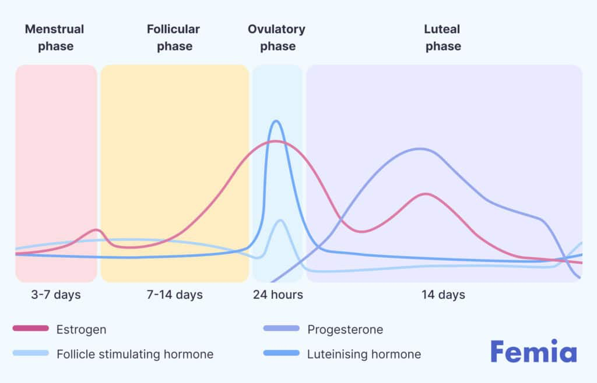

The menstrual cycle has different phases: menstrual, follicular, ovulatory and luteal. Each have different energy and hormone levels, and with nutrient and other lifestyle factors you can support the production and detoxing of these hormones.
This phase kicks off on the first day of your period. Hormones like estrogen and progesterone are at their lowest, and your body is shedding the uterine lining.
How you might feel:
Did you know? During this time, your right and left brain hemispheres literally communicate better, making it an ideal time for reflection and strategic planning. That's your body asking for a break while your mind gears up for big realizations!
Phase tip: Go inward and rest. Think yoga, journaling, and nutrient-dense foods like leafy greens and bone broth to replenish iron and minerals. Magnesium-rich foods (hello, dark chocolate!) can ease cramps. Gentle movement like walking or yoga can help circulation and reduce discomfort.
In terms of nutrition, focus on: Iron replenishment, reducing inflammation, and supporting energy levels. Do this by focusing on these nutrients:
After your period ends, it is seriously like the sun RISES inside your body! Estrogen levels start climbing, prepping your ovaries to release an egg. It is a time of growth and renewal.
How you might feel:
Cool Fact: In this phase, your brain's dopamine levels rise, so you may notice an increase in motivation, creativity, and even your problem-solving abilities! This is the time for new projects, decisions, and high-energy workouts! Do not go too fast or heavy in the beginning though
In therms of nutrition, focus on: Supporting estrogen production, improving insulin sensitivity, and boosting energy. Do this by focusing on these nutrients:
Your metabolism is slower, so focus on leaner proteins and light foods.
Ovulation is when your body is primed for fertility, whether you're trying for a baby or not. Estrogen is at its peak, and you'll feel confident, social, and magnetic (as long as your hormones are balanced, you may not feel great during this phase if your hormones are dysregulated FYI!).
How you might feel:
Did you know? If you can FEEL ovulation happening (a slight twinge or even worse) -- it's called "mittelschmerz" (middle pain). This happens as one ovary releases an egg. And here’s a wild one—some studies show that women’s faces are ACTUALLY perceived as more attractive during this phase due to subtle hormonal shifts!
Phase Tip: This is your time to shiiiiiine! Plan social events or have those hard conversations. Load up on fiber-rich foods like chia seeds, raw carrots and berries to help your body clear out any excess estrogen.
In therms of nutrition, focus on: Supporting liver detoxification, egg health, and hydration. Do this by focusing on these nutrients:
Estrogen has dropped, and progesterone will rise due to the corpus luteum. Progesterone helps you feel calmer, as it stimulates GABA receptors in the brain. It is very sensitive though, so do not stress it out.
How you might feel:
Fun Fact: Progesterone is your calming hormone, but if it drops too low, you'll start to feel irritable and ANXIOUS. So luteal phase anxiety comes from too little progesterone, or a big hormone drop right before your period starts. During the luteal phase you're naturally more intuitive and detail-oriented, which is why it’s great for analyzing or organizing... take advantage!
Phase Tip: Listen to your body’s need for rest and nourishment. Slowww down. Say "no" more. Protein, healthy fats, and complex carbs help stabilize blood sugar and curb cravings.
In therms of nutrition, focus on: Stabilizing blood sugar, reducing inflammation, and supporting progesterone. Do this by focusing on these nutrients:
Your metabolism is faster, actually you burn up to 300 kcal per day more and your core temperature increases by approximately 0.3 degrees Celsius. Focus on warmer meals and little increased portions.
